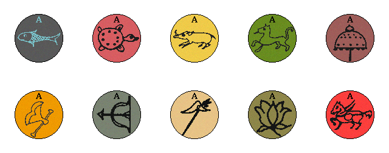

Ganjifa 正在玩来自印度和该地区其他国家的牌。通常是圆形的，也生产了一些矩形的甲板。赶集发与其他类型的卡片最显着的区别在于，赶集发卡片传统上都是单独手绘的。每副牌有八到十二个或更多的花色，每个花色通常有十二个等级。两种最常见的 Ganjifa 牌组是拥有八种花色的莫卧儿牌和拥有十种花色的达沙瓦塔拉。这些花色有编号从 A 到 10 的点牌和两张法庭牌，瓦齐尔牌和米尔牌。花色的顺序是：Matsya、Kuchha、Varaha、Narsingha、Vamana、Parashurama、Rama、Krishna、Buddha 和 Kalanki。赶集发纸牌游戏的玩法与使用标准牌组的游戏相同，但牌组中不同纸牌数量较多（96 或 120）增加了复杂性。事实上，每种套装都有自己的颜色，这使得使用“替代颜色”行堆栈的游戏变得非常有趣。
